Our Blog
Expert advice, guides, and news on everything window tinting in Riverside.
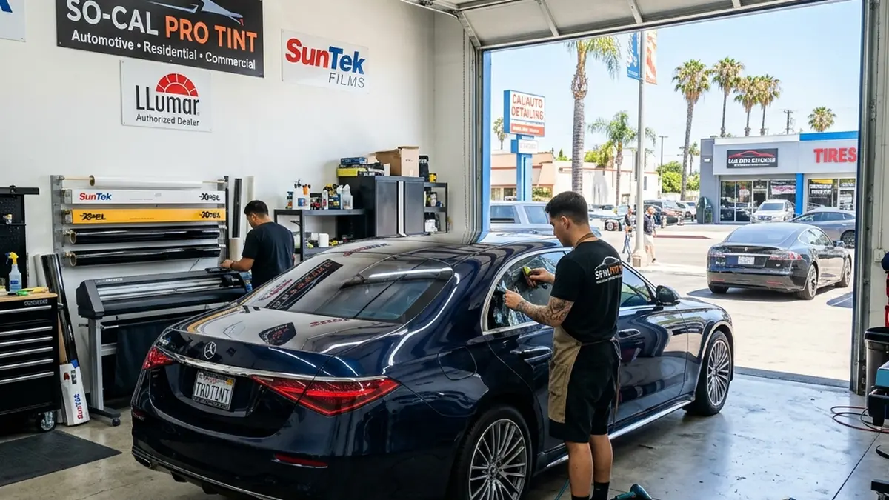
Riverside Tints: Your Local Experts in Automotive and Residential Film
Looking for the best riverside tint shop? Discover why Riverside Tints is the trusted local authority for both cars and homes in the Inland Empire.
The Complete Guide to Window Tinting: Everything You Need to Know
Considering window tinting? Read our ultimate guide covering film types, state laws, and how to choose the perfect window tint for your vehicle.
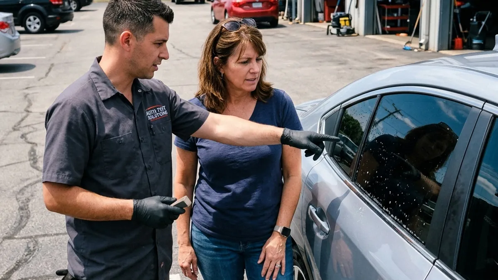
Car Window Tinting Near Me: Finding the Perfect Match
Searching for car window tinting near me? Learn how to match the perfect shade and material to your specific driving needs and aesthetic.
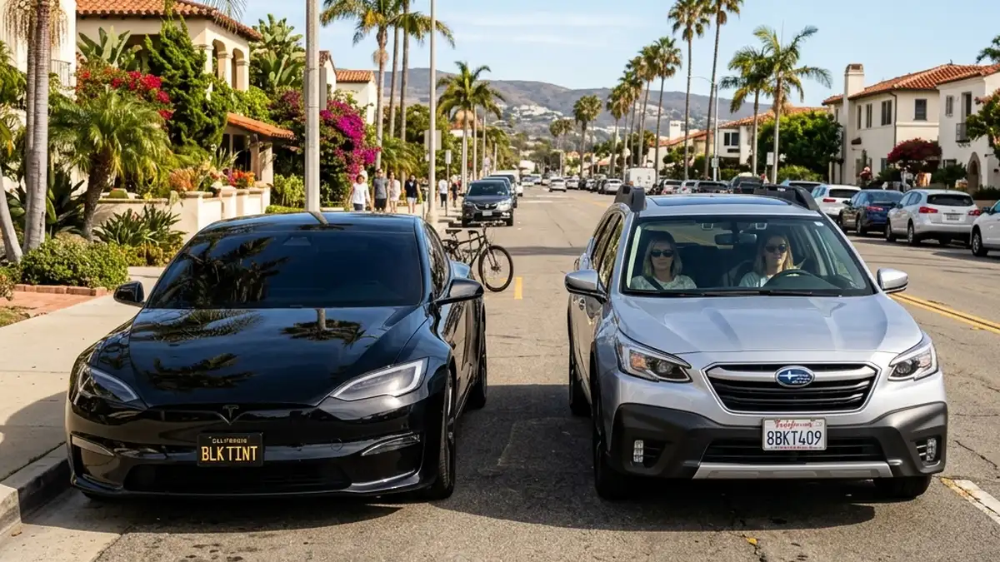
Is Darker Tint Always Better? Dispelling Window Tint Myths
Think pitch black windows keep your car cooler? Discover why lighter ceramic films often outperform dark dyed tints in heat rejection.
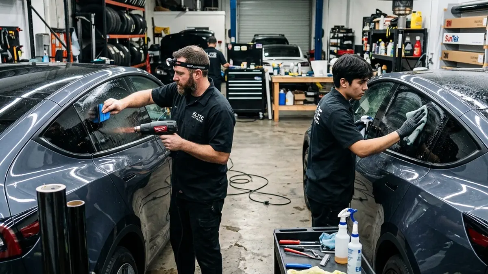
How Long Does Car Window Tinting Actually Take?
Wondering how long your car will be in the shop? We break down the window tinting timeline, from prep work to final installation and curing.

Is LLumar the Best Tint? Comparing the Top Brands
Wondering if is llumar the best tint? We break down how LLumar window film compares to other leading brands in heat rejection and clarity.
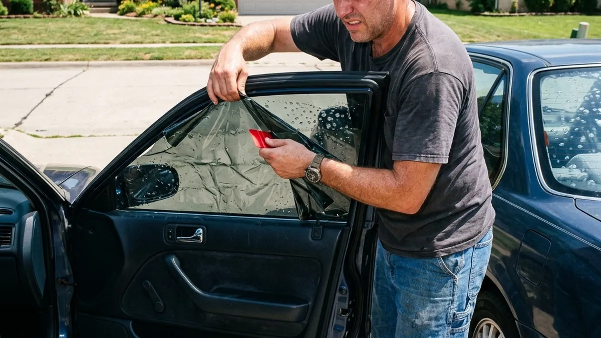
How to Install Car Tint: Why You Should Leave It to the Pros
Looking up how to install car tint? Before you buy a DIY kit, read about the extreme difficulties of shrinking and applying window film.
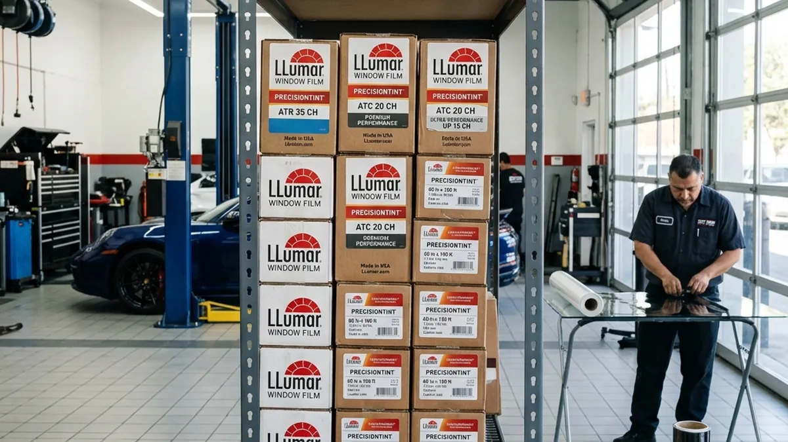
Is LLumar Tint Good? A Deep Dive into Durability and Warranty
Asking is llumar tint good? Dive into the durability, scratch resistance, and lifetime warranty that makes LLumar an industry leader.
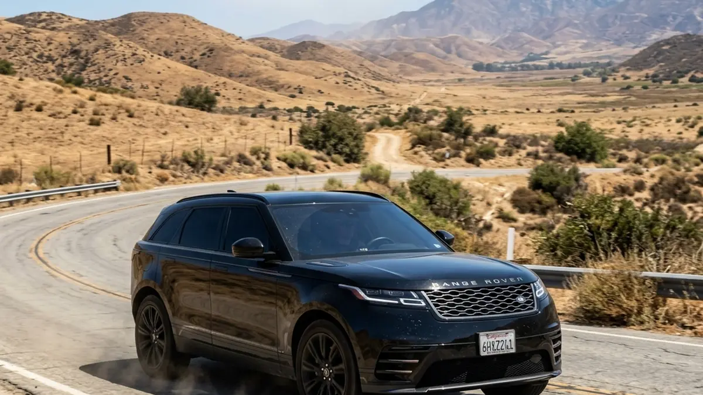
What is the Best Ceramic Tint for French Valley, CA Heat?
Wondering what is the best ceramic tint for french valley ca heat? Discover why premium nano-ceramic film is essential for surviving the summer.
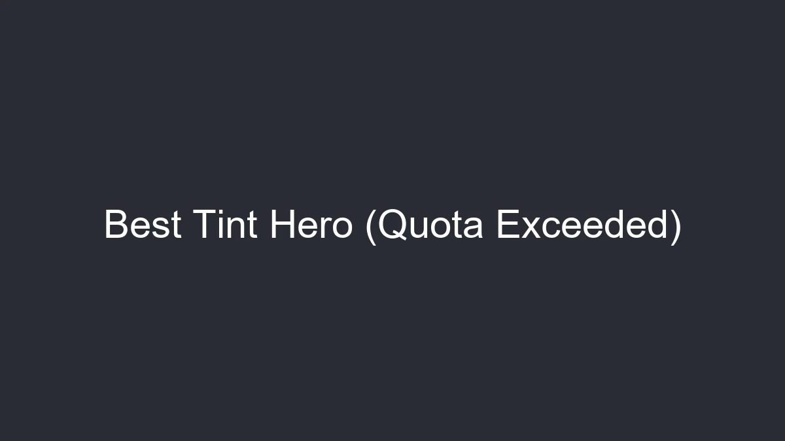
The Best Window Tinting for Cars Near Me: A Definitive Guide
Stop searching for the best window tinting for cars near me. Learn why ceramic film is the undisputed king of automotive window tint near me.
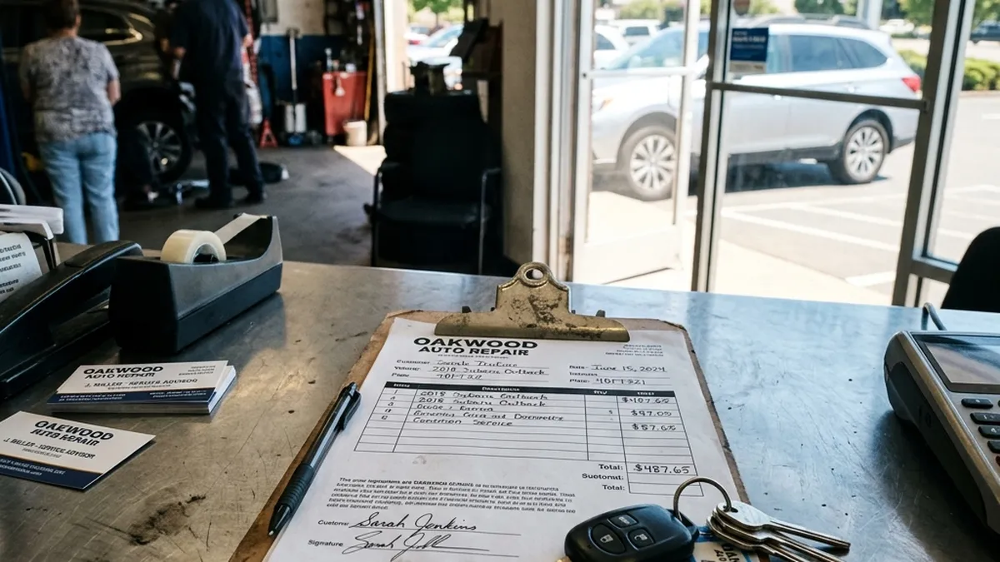
Window Tint Riverside Prices: What to Expect in 2026
Wondering about window tint riverside prices? Get a transparent breakdown of what premium window film riverside costs.
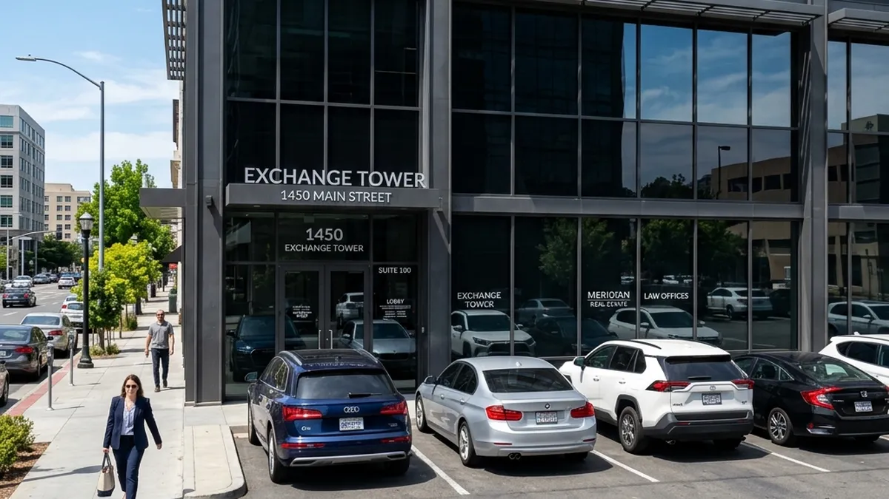
Commercial Window Tinting Near Me: Elevating Your Business
Searching for commercial window tinting near me? Learn how architectural window film can lower overhead and improve office privacy.

Residential Window Tinting Near Me: Cooling Your Riverside Home
Stop overpaying for AC. Discover how searching for residential window tinting near me can drastically lower your energy bills.
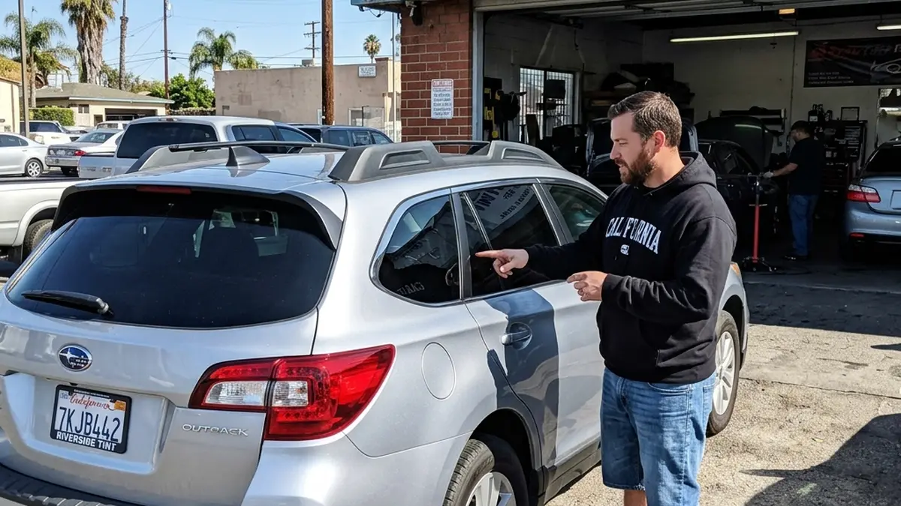
Window Tint Near Me: How to Spot Quality in Riverside
Searching for a window tint near me or car tint near me? Learn how to distinguish between low-grade film and premium ceramic installations in Riverside.
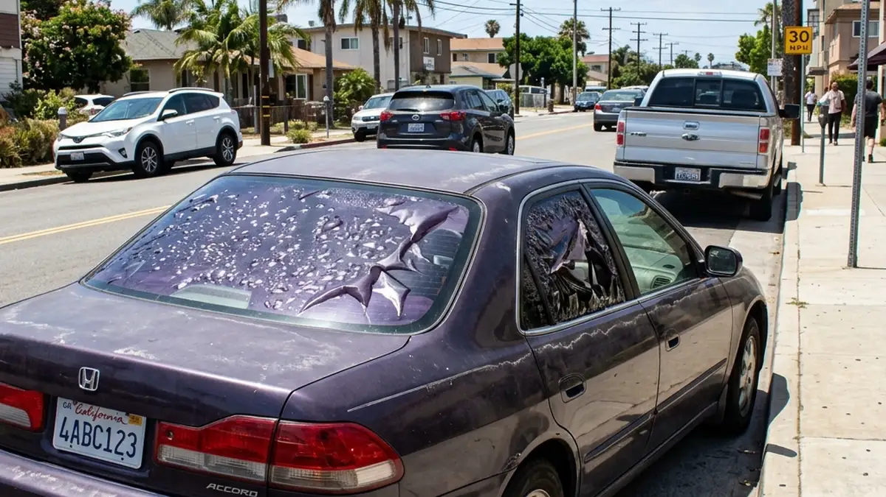
Why You Shouldn't Settle for Anything Less Than A Plus Auto Tinting
Avoid the purple, bubbled nightmare. Learn why demanding A plus auto tinting and xtreme tinting precision is the only way to go.
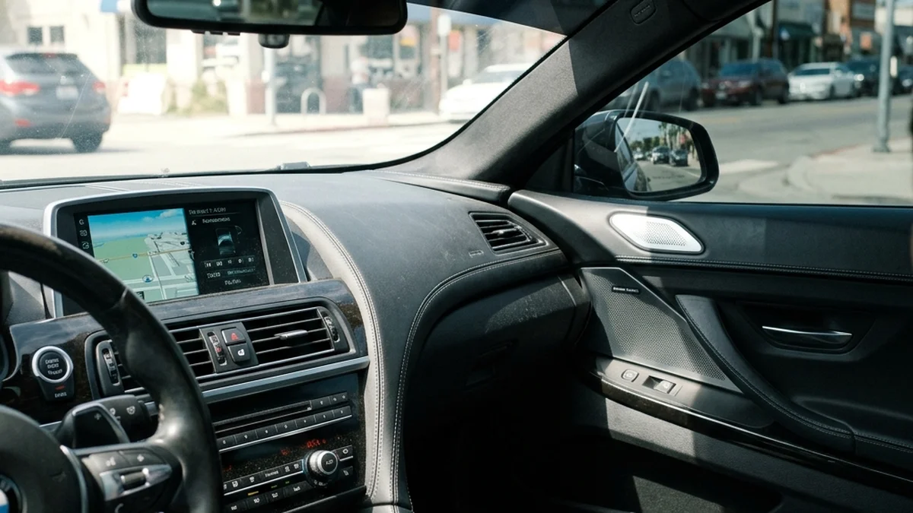
Enhancing Your Ride: Precision Car Audio and Tint
Discover how premium window tinting complements precision car audio and tint upgrades by protecting interior electronics from heat.
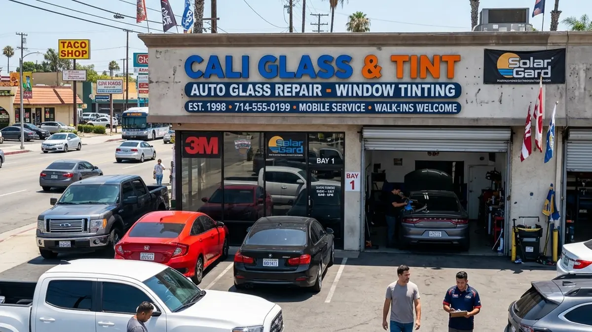
Auto Glass & Tint Shop: A One-Stop Solution for Your Vehicle
Why visit a dedicated auto glass & tint shop? Discover the benefits of comprehensive auto glass and tint services for your vehicle.
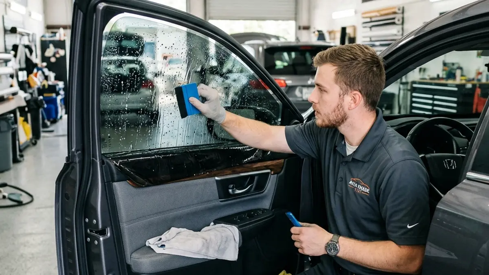
The Ultimate Guide to Car Tint Installation: What to Expect
Curious about the car tint installation process? Here is a behind-the-scenes look at how we tint automotive glass to perfection.
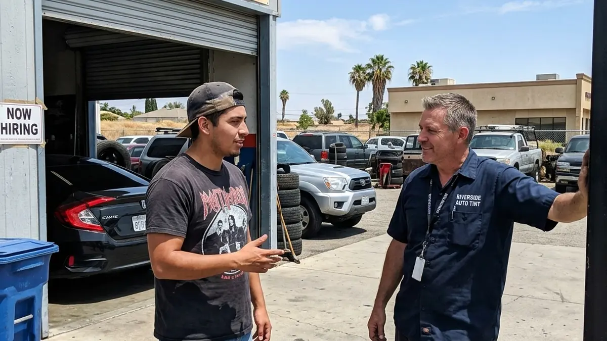
How to Find the Best Car Window Tint Service in Your Area
Looking to tint a car near me? Learn how to identify a top-tier car window tint shop and avoid the shady operators in Riverside.

Auto Glass and Tint: Comprehensive Protection for Your Vehicle
Discover how combining quality auto glass and tint provides the ultimate protection for your vehicle, from UV rays to shatter resistance.
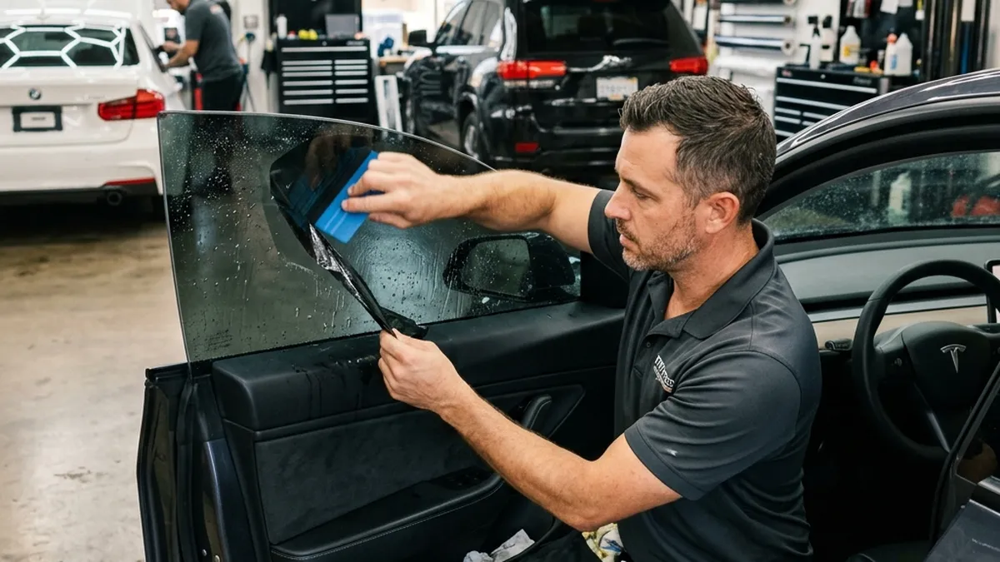
How to Choose the Best Car Window Tint Installation Shop Near You
Looking for the best car window tint installation? Discover what sets a premier tinting shop apart from the rest.
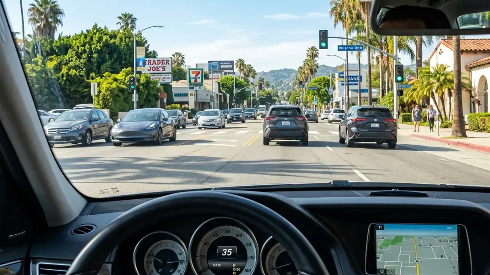
California Tint Laws 2026: Can You Tint Front Windows on a Car?
Learn the legal limits for tinting the front windows on a car in California from an expert automotive window tinting service.

Why LLumar Ceramic Window Tint is the Best Choice for Riverside Heat
Discover why LLumar ceramic window tint is the top choice for quality auto glass tint and professional car window tinting in California.
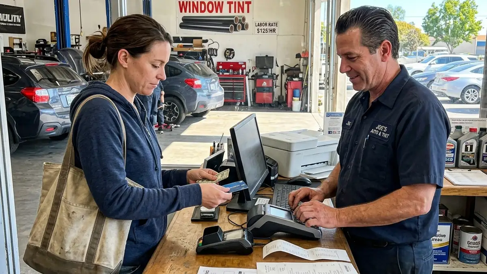
The Ultimate Auto Window Tinting Cost Guide (2026)
Wondering about auto window tinting cost in Riverside? Find out what you should pay for ceramic vs dyed films at your local car tint service.